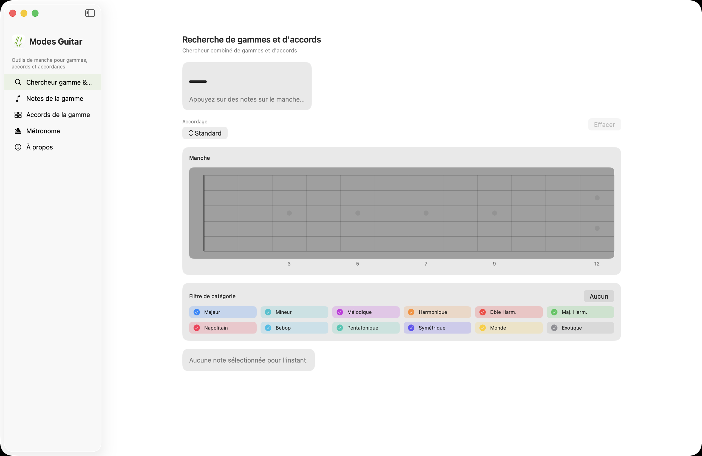
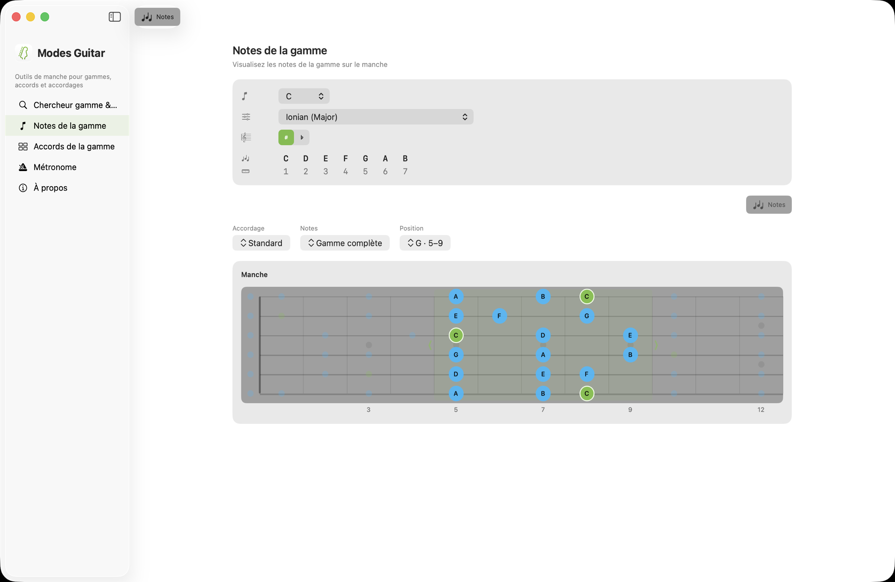
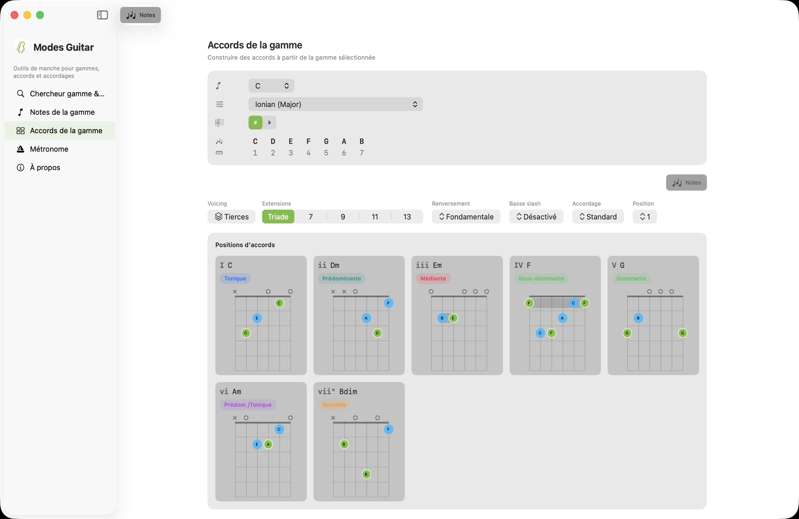
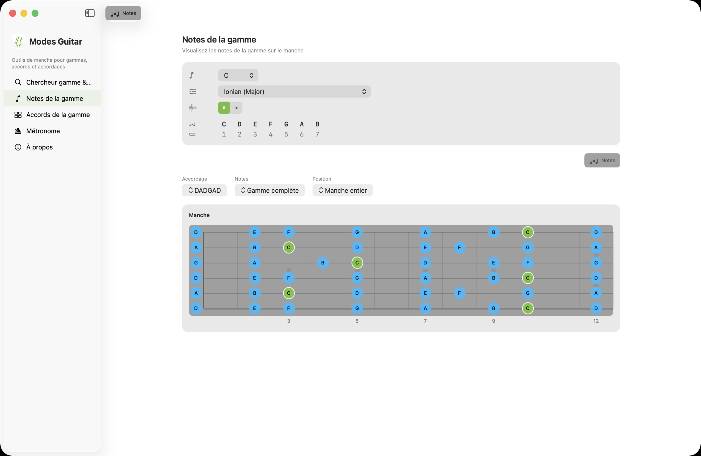
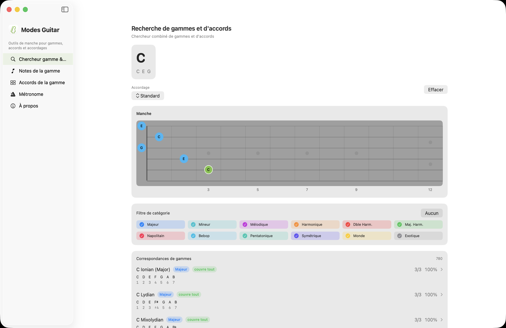
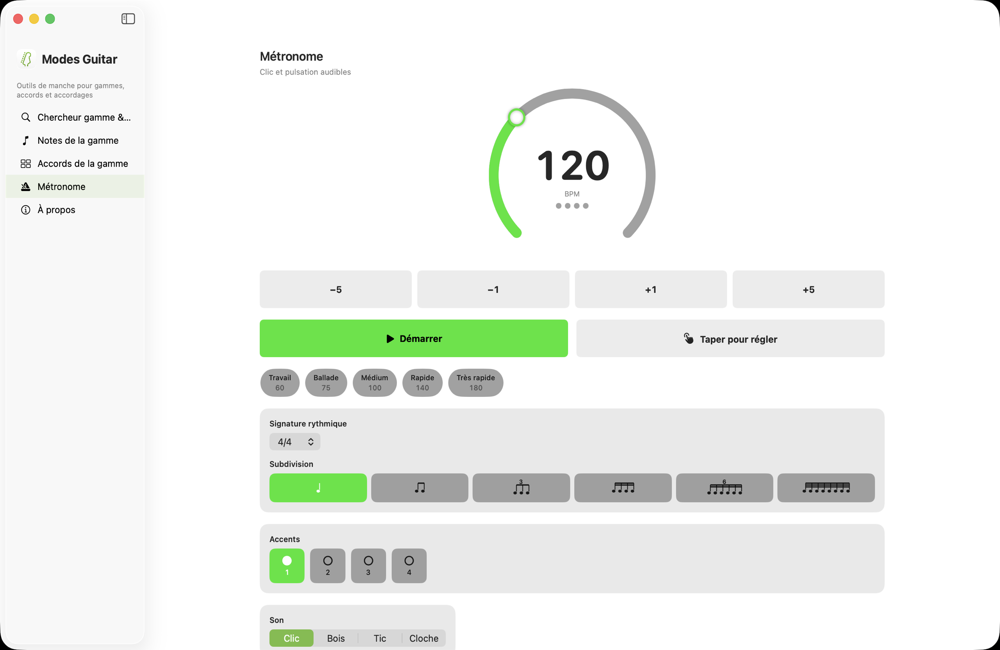
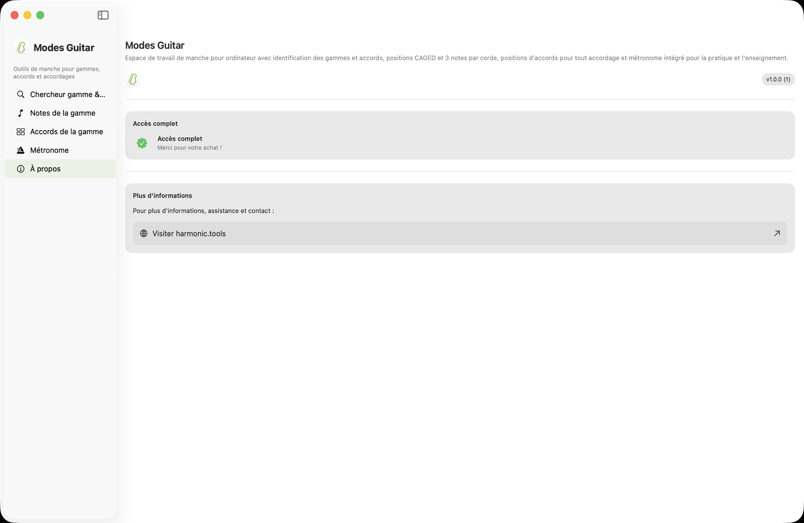

Modes Guitar pour macOS
Un espace de travail du manche pour le Mac. Tapez les notes que vous jouez pour découvrir ce que vous êtes en train de jouer, déployez n'importe quelle gamme en positions CAGED ou trois-notes-par-corde, parcourez des accords jouables dans n'importe quel accordage, et travaillez le tout avec un métronome intégré dans une application à barre latérale qui se place tranquillement à côté de votre STAN ou de votre plan de cours.
- Détecteur de gammes et accords directement sur le manche
- Positions CAGED et trois-notes-par-corde
- Accords jouables dans n'importe quel accordage
- 20 accordages, plus votre propre accordage personnalisé
- Métronome d'entraînement et widgets du Centre de notifications
Captures d'écran
Comprend des captures en mode clair et sombre qui suivent le thème du site.








Fonctionnalités
- Détecteur de gammes et accords : Tapez les notes que vous tenez directement sur le manche. Modes Guitar nomme l'accord en temps réel majeur, mineur, diminué, augmenté, étendu, suspendu, et plus encore et classe chaque gamme qui correspond par couverture de notes. Filtrez par catégorie de gamme pour affiner la liste, puis passez directement aux accords de cette gamme.
- Gammes sur le manche : Choisissez une fondamentale et une gamme et voyez chaque note de la gamme s'illuminer sur tout le manche. Passez aux positions CAGED ou aux traits trois-notes-par-corde, faites glisser un cadre le long du manche pour changer de position, et réduisez les notes à la triade, la septième, la pentatonique ou la gamme complète pour voir la forme derrière la forme.
- Formes d'accords : Chaque degré de la gamme obtient de vrais accords jouables, avec les repères de cordes à vide et étouffées, les indicateurs de barré et une marge de numéros de frettes lorsque la forme se situe en haut du manche. Parcourez les positions le long du manche, choisissez un renversement, ou forcez n'importe quelle note de la gamme à la basse pour des accords slash.
- 20 accordages, plus le vôtre : Standard, Drop D, Drop C, E♭ Standard, DADGAD, Open G, Open D, sept cordes, baryton, basse quatre et cinq cordes, ukulélé, banjo (cinq cordes, ténor et plectre) et mandoline. Les formes, les accords et les noms de notes sont recalculés pour l'accordage que vous choisissez, et réaccorder conserve votre doigté pour que vous puissiez entendre ce que devient la même forme. Ou créez le vôtre : choisissez de 3 à 8 cordes et accordez chacune à l'oreille, à partir de n'importe quel préréglage.
- Métronome d'entraînement : Un métronome complet est de la partie : signatures rythmiques, subdivisions, swing, accents par temps, quatre voix de clic, volume réglable et retour haptique, ainsi que des tempos rapides et des préréglages enregistrés pour les passages que vous travaillez.
- Widgets : Gardez le métronome dans le Centre de notifications et démarrez-le ou arrêtez-le sans changer d'application, et recevez une nouvelle gamme du jour et un nouvel accord du jour à travailler.
Conçu pour les guitaristes
- Fonctionne entièrement sur l'appareil pas de compte, pas de publicités, pas de suivi
- Aucune connexion Internet requise
- Apparences claire et sombre partout
- Une application à barre latérale qui se place à côté de votre STAN ou de votre plan de cours
- Traduit en 11 langues
Que vous soyez un guitariste apprenant les modes, un bassiste cartographiant un nouvel accordage, un professeur créant des exercices, ou un auteur-compositeur en quête du prochain accord, Modes Guitar met tout le manche sur votre Mac. Essayez gratuitement pendant 7 jours après la période d'essai, débloquez l'accès complet avec un achat unique. Sans abonnement.
Référence du manche et des accordages
Une référence complète des accordages, positions, outils d'accords et fonctions de métronome derrière l'application.
Accordages
Les formes, les accords et les noms de notes sont recalculés pour l'accordage que vous choisissez. Réaccorder conserve votre doigté, pour que vous puissiez entendre ce que devient la même forme. Les notes sont listées de la corde grave à l'aiguë.
| Accordage | Notes (grave → aiguë) | Cordes |
|---|---|---|
| Standard | E A D G B E | 6 |
| Drop D | D A D G B E | 6 |
| Drop C | C G C F A D | 6 |
| E♭ Standard | E♭ A♭ D♭ G♭ B♭ E♭ | 6 |
| DADGAD | D A D G A D | 6 |
| Open G | D G D G B D | 6 |
| Open D | D A D F♯ A D | 6 |
| Seven-String | B E A D G B E | 7 |
| Baritone | B E A D F♯ B | 6 |
| Bass (4-String) | E A D G | 4 |
| Bass (5-String) | B E A D G | 5 |
| Ukulele | G C E A | 4 |
| Banjo (5-String) | G D G B D | 5 |
| Banjo (Tenor) | C G D A | 4 |
| Banjo (Plectrum) | C G B D | 4 |
| Mandolin | G D A E | 4 |
Créez aussi votre propre accordage : choisissez de 3 à 8 cordes et accordez chacune à l'oreille, à partir de n'importe quel préréglage.
Positions sur le manche
Déployez n'importe quelle gamme sur le manche et modifiez la quantité que vous voyez. Faites glisser un cadre le long du manche pour changer de position.
Systèmes de positions
Sous-ensembles de notes
Formes d'accords
Chaque degré de la gamme obtient de vrais accords jouables dans l'accordage actuel.
- Playable grips — open- and muted-string markers, barre indicators, and a fret-number gutter when the shape sits up the neck.
- Positions — step through the shapes along the neck.
- Inversions — choose which chord tone sits in the bass.
- Slash chords — force any scale tone into the bass.
Métronome d'entraînement
Un métronome complet pour les passages que vous travaillez.
Widgets
Accédez au métronome et à une dose quotidienne de théorie sans changer d'application.